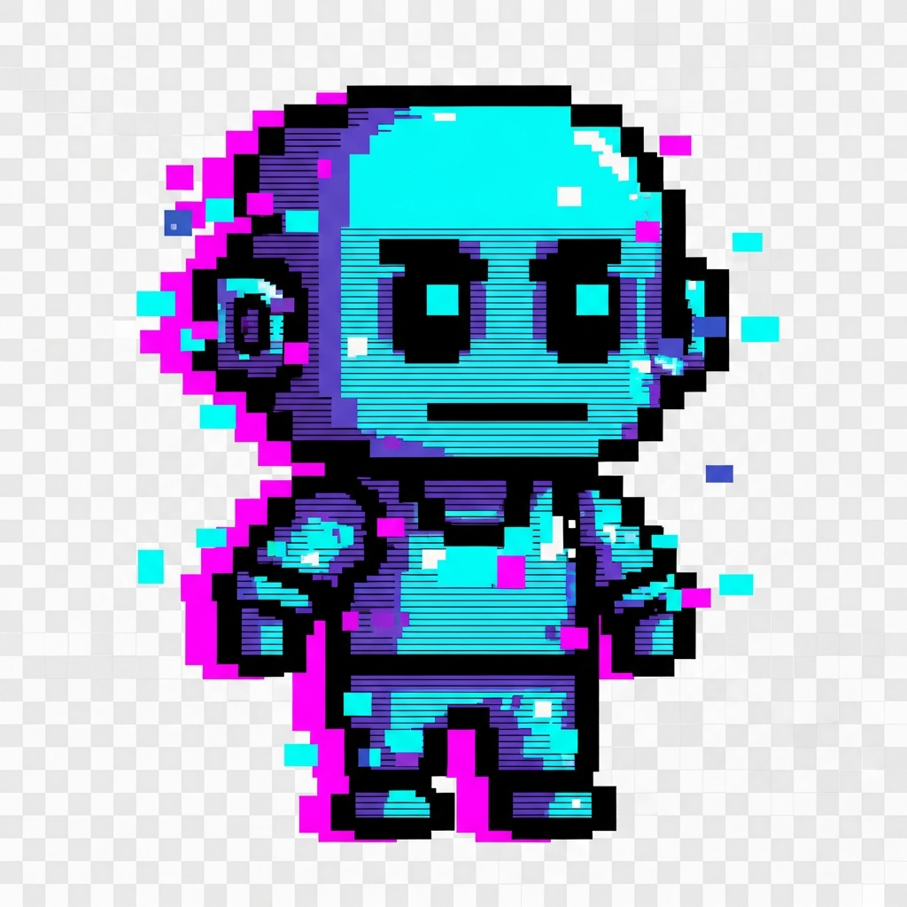

Everything you need to run the AI escape room with student teams: how to get in, what each puzzle asks, how to help when a team is stuck, and how to wrap up. No technical knowledge needed.

Open this on every team's device.
Wipes that device and goes to the title screen. Use between groups.
Lets you mark puzzles solved. For adults only. See "When something goes wrong".
Students are locked in an AI research lab with Glitch, a lab robot whose AI got scrambled. They click glowing objects in the lab to open puzzles. Each puzzle teaches one idea about how AI works.
Check the devices. Open glitchapp.vercel.app on each team's laptop or tablet. Chrome is the most tested browser. If you plan to use iPads or another browser, play a puzzle on one first.
Use a normal browser window, not a private or incognito one. The game saves progress in the browser. A private window loses everything when it's closed.
Reset every device right before students arrive. Open glitchapp.vercel.app/new on each one. Bookmarking that page makes this one click.
Print the team handouts. Make sure they show the color order for the door code: Green, then Blue, then Red. Teams can't escape without it.
Keep this guide handy, with the answer key at the back kept away from students.
Title screen. Students click the START button painted on the picture. Glitch tells a short story in four screens. They can read it or press Skip intro.
The lab. Glowing blue boxes mark the puzzles. Hovering over one shows its name. Grey boxes are solved; they can still be clicked to play again. The keypad by the door shows a padlock until it's ready.
Puzzles. Every puzzle has a Hint button at the top right. It gives three hints, each more specific than the last. Encourage teams to try one hint before asking you.
Progress check. The Mission Log button in the lab lists what each team has solved, the digits they've earned, and what's still locked.
Escape. After the right code, the door opens and the end screen shows the team's time. The timer starts when they open their first puzzle, not at the title screen.
What students do, what success looks like, and where teams usually get stuck. Full answers are in the answer key at the back.
| What you see | What to do |
|---|---|
| The keypad has a padlock or says it's still locked | All four other puzzles must be solved first. Open the Mission Log from the lab to see which one is missing. |
| "Keypad cooling down… 30s" | The team entered 3 wrong codes. Wait 30 seconds. Meanwhile, check the handout's color order and the digits shown on the keypad. |
| The code doesn't work | Usually the digits are in the wrong order. It's Green, then Blue, then Red. Hovering over a solved object in the lab shows the digit it gave. The full code is in the answer key. |
| A team's progress disappeared | Progress lives in that one browser on that one device. It's lost if they switched devices or browsers, used a private window, or the game was more than 12 hours old. You can give back solved puzzles from /dev on that device (see below). |
| A new group sits down at a used device | Open glitchapp.vercel.app/new. Students can't reset a game mid-way on purpose, so one student can't wipe the team's work. |
| The lab picture is cut off or too big | Zoom the browser out: Ctrl and − (Windows/Chromebook) or ⌘ and − (Mac). |
| Cards won't drag on a tablet | Tap instead: tap a card, then tap the slot (Prompt Precision) or Place here (Fact or Fiction). |
| The screen looks old or odd after an update | Refresh the page. Progress is kept. |
| A team is stuck on a puzzle | Point them to the Hint button first; the third hint is very direct. Then use the answer key to give a nudge, not the answer. |
| A team runs out of time | On their device, open /dev and press mark solved next to the puzzle they're on. They can then finish the keypad. |
| A student wants to replay a puzzle | Click its grey box in the lab, or use Play again in the Mission Log. Replaying doesn't change their digits. |
The end screen lists four habits. They make a good closing discussion:
To play again, a team presses Play Again on the end screen and confirms. That starts a brand-new game with a fresh timer.
2 4 6
Green 2 from Prompt Precision, then Blue 4 from Feedback Maze, then Red 6 from Bad Data. The code is the same for every team.
Shortest route to the Bridge:
Lab → Medical → Crew Quarters → Rec Room → Gym → Cafe → Bridge
Give 👍 to any move along this route and 👎 to anything else, including Glitch's first suggestion (up, into a dead end). Some short stretches have only one way to go, so Glitch moves on without asking.
Glitch reports one wrong slot per check, in this order: Task, Output Format, Constraints, Persona, Context, Tone / Style.
Statements appear in this order in the game.
Glitch Lab Facilitator Guide · game link: glitchapp.vercel.app · October 2026